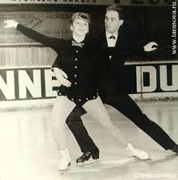

피겨스케이팅
김연아
야구딘
타라소바
타라소바
Tatiana Anatolyevna Tarasova
is a Russian figure skating coach and national figure skating team adviser. Tarasova has been coach to more world and Olympic champions than any other coach in skating history.
